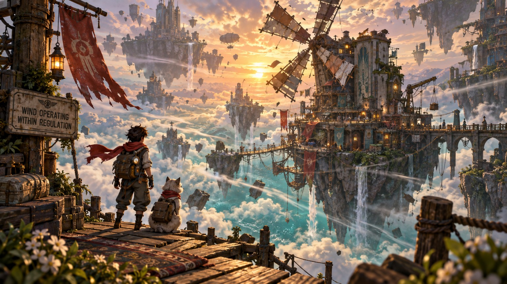
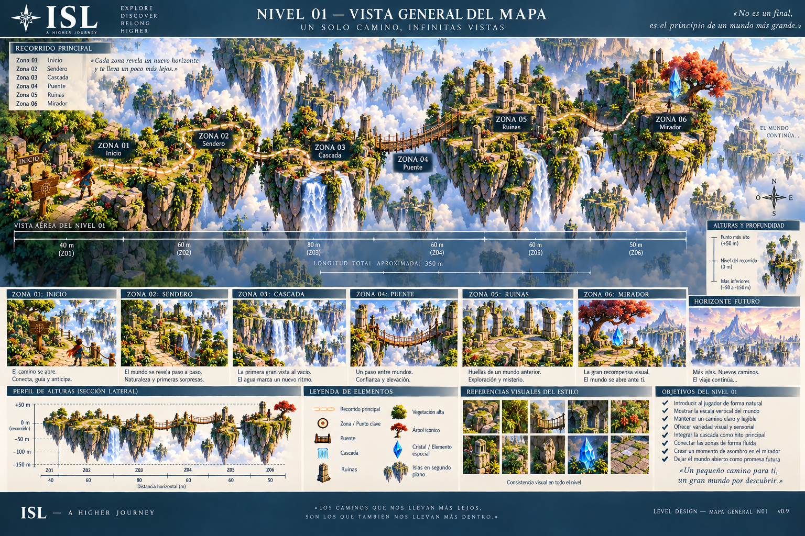
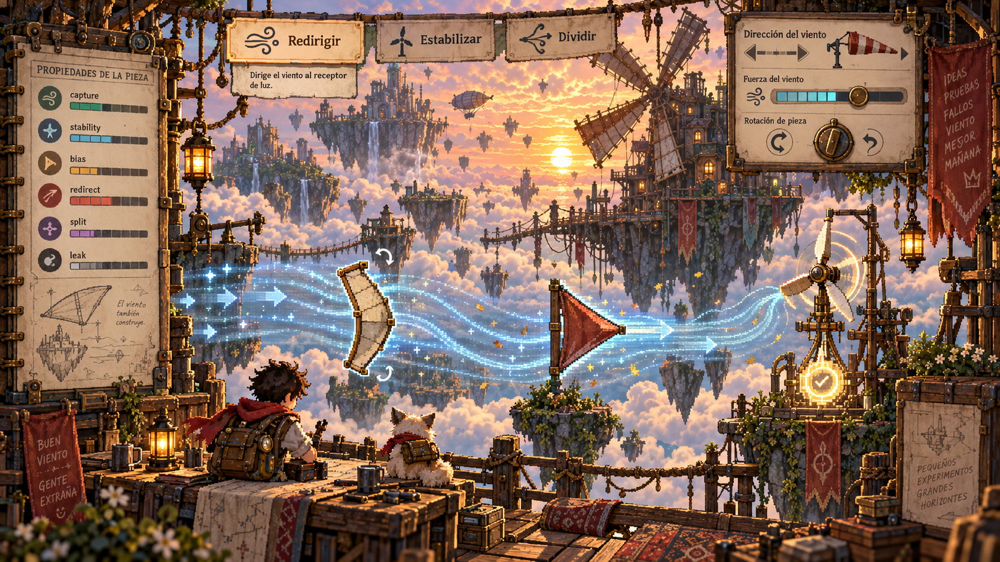
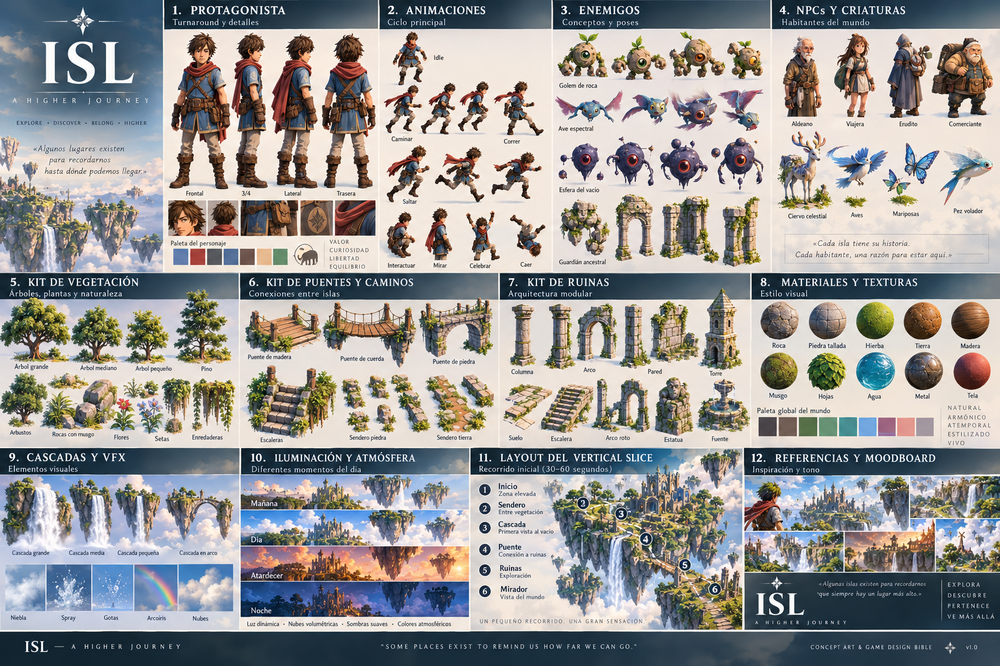
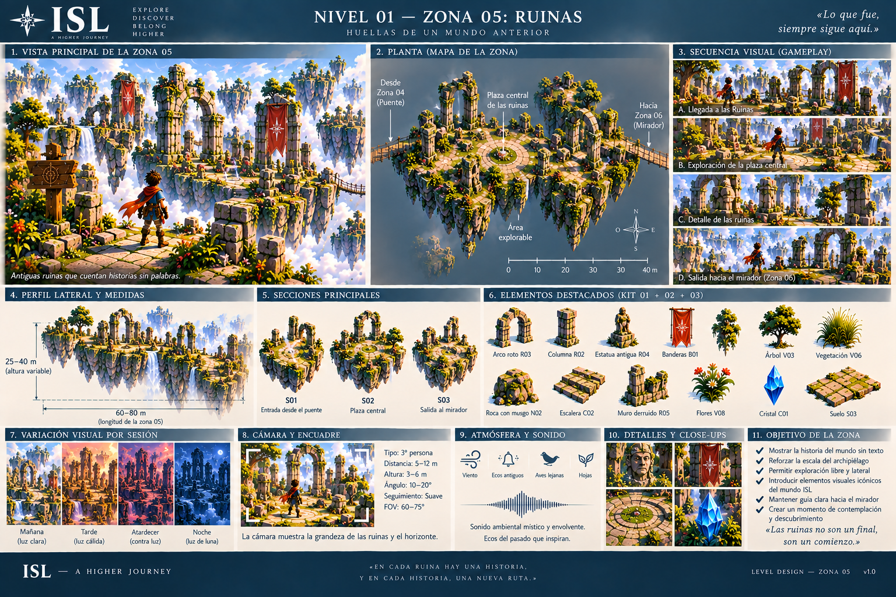
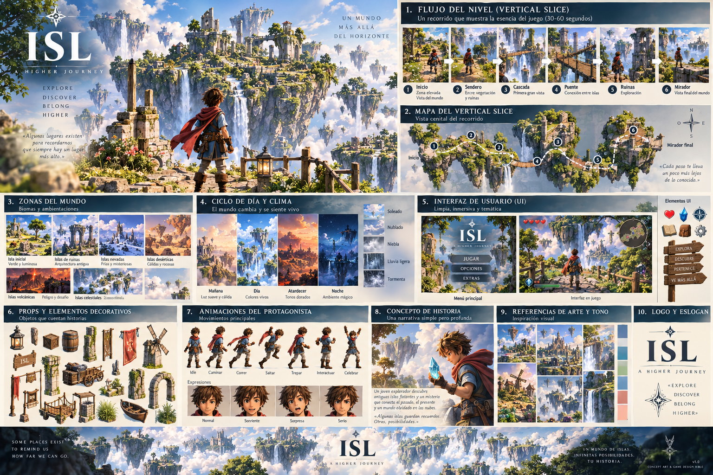

Un mundo que recuerda tus pasos.
Primero vives. Luego entiendes qué significó.
ISL quiere una historia coral, humana, absurda y capaz de ponerse oscura sin moralina. La referencia literaria funciona por principios —sátira social, contradicción, personajes con vida propia, humor junto a consecuencias reales— nunca por copiar voz, frases o superficie de ningún autor.
El cielo no es decorado.
El viaje ocurre entre regiones guiadas y espacios locales con libertad. El mundo debe orientar antes que el HUD: viento, luz, sonido, arquitectura, criaturas, tripulación y Huellas cuentan dónde estás y qué ha cambiado.

Islas
Zonas autoradas, cortinas de aire, rutas, secretos y leyes imposibles.

Escenas
Momentos pequeños que más tarde vuelven con otra lectura.

Criaturas
Extrañas, táctiles, bellas o peligrosas; no monstruos de catálogo.

Reliquias
Cosas que tienen historia, uso y memoria material.

Huellas
El juego recuerda aproximaciones, relaciones y decisiones sin convertirlas en una tabla moral.
Recreo
Jugar, pescar, intercambiar basura o encontrar algo imposible sin deberle productividad a nadie.
Personas antes que funciones.
Los personajes pueden beber de amigos, conocidos, dibujos, conversaciones y vida real, pero la persona real nunca se copia automáticamente al juego. ISL extrae gesto, contradicción, ritmo, relación y función; después transforma, mezcla y distancia.
REALIDAD → HUELLA → DESIDENTIFICACIÓN → FUNCIÓN → CONTRADICCIÓN → MUTACIÓN ISL. Una foto puede aportar postura, ropa, materialidad o contexto; el carácter llega de la experiencia humana, no de leer una cara.
RECONOCER → MALINTERPRETAR → FRICCIÓN → DISTANCIA/CAMBIO → NUEVA INFORMACIÓN → RECONOCER DE NUEVO. La relación puede terminar en reencuentro o separación aceptada.
Algunas relaciones se entienden mejor reparando, dibujando, cocinando, navegando o improvisando juntos que seleccionando respuestas de diálogo.
No todos deben ser simpáticos ni redimirse. Gente brillante e insoportable, seca, generosa con límites, cobarde, leal, absurda o contradictoria puede convivir sin convertirse en etiquetas morales.
Rutina, viaje, combate, creación y consecuencia.
No es un mundo abierto de checklist. La macro-ruta puede estar guiada mientras el interior cambia por relaciones, tripulación, Huellas, equipo y formas de jugar.
Tareas, conversaciones, trabajo, descanso y pequeñas rutinas alimentan relaciones y preparación. La normalidad crea contraste para que lo extraordinario importe.
Navegación, viento, maniobras y combate donde el cielo deja de ser paisaje. El barco es hogar, sistema y consecuencia.
Encuentros tácticos y legibles, con transición desde el mundo 3D sin que parezca haber entrado otro juego.
USO → CONTEXTO → PATRÓN → TENSIÓN DE ARQUETIPO → MUTACIÓN. Las habilidades no deberían sentirse como una hoja de cálculo desconectada de la vida del personaje.
Viajero, Druida, Alquimista, Pirata Punk y otras lentes pueden cambiar el recorrido, pero el conflicto entre rol inicial y arquetipo emergente sigue siendo una hipótesis en prueba.
Menos minimapa y marcadores intrusivos. Más mundo, viento, sonido, arquitectura, Brújula/Huellas y lugares que ayudan a recuperar el rumbo.
Bello y roto. Tierno y corrosivo.
La Contradicción Viva no obliga a meter rareza en todo. Su función es evitar que ISL se vuelva genérico, infantilizado o excesivamente limpio cuando una anomalía humana, punk o imposible puede devolverle identidad.
Oscuridad fuerte cuando toca; humor lateral; material gastado; ternura sin azúcar; mundo grande sin convertir al jugador en turista de iconos. La iluminación debe sostener negros locales, medios modelados y highlights controlados sin sacrificar legibilidad.
La metodología está detrás del telón.
El jugador no debería necesitar entender el organismo. Para producción, cada pieza importante pasa por la mínima cadena que reduzca incertidumbre: recuperar fuente, definir entidad, probar barato, observar, decidir y sólo entonces escalar.
INTENT → SOURCE → ENTITY → HYPOTHESIS → CHEAP TEST → EVIDENCE → HUMAN READ → DECISION → LOCK → PRODUCTION.
La vida real alimenta el juego sin convertirlo en álbum privado. La verdad emocional puede sobrevivir aunque se pierda la literalidad.
Extraer función, no firma. Una referencia sólo sirve si el resultado continúa teniendo valor cuando nadie reconoce de dónde vino.
Épico ↔ humano · extraño ↔ legible · artesanal ↔ robusto · libertad ↔ consecuencia · sistemas ↔ relaciones.
La visión no sustituye la prueba.
Esta landing puede enseñar hacia dónde va ISL, pero la autoridad operativa sigue estando en MASTER / CURRENT / checkpoints y en los gates humanos. El siguiente gran salto no es añadir más lore: es demostrar el juego en manos humanas.
Validación humana del build/experiencia que corresponda al gate activo. DEPLOYED ≠ HUMAN_VERIFIED.
El siguiente sistema se despierta sólo cuando el anterior deja evidencia suficiente.